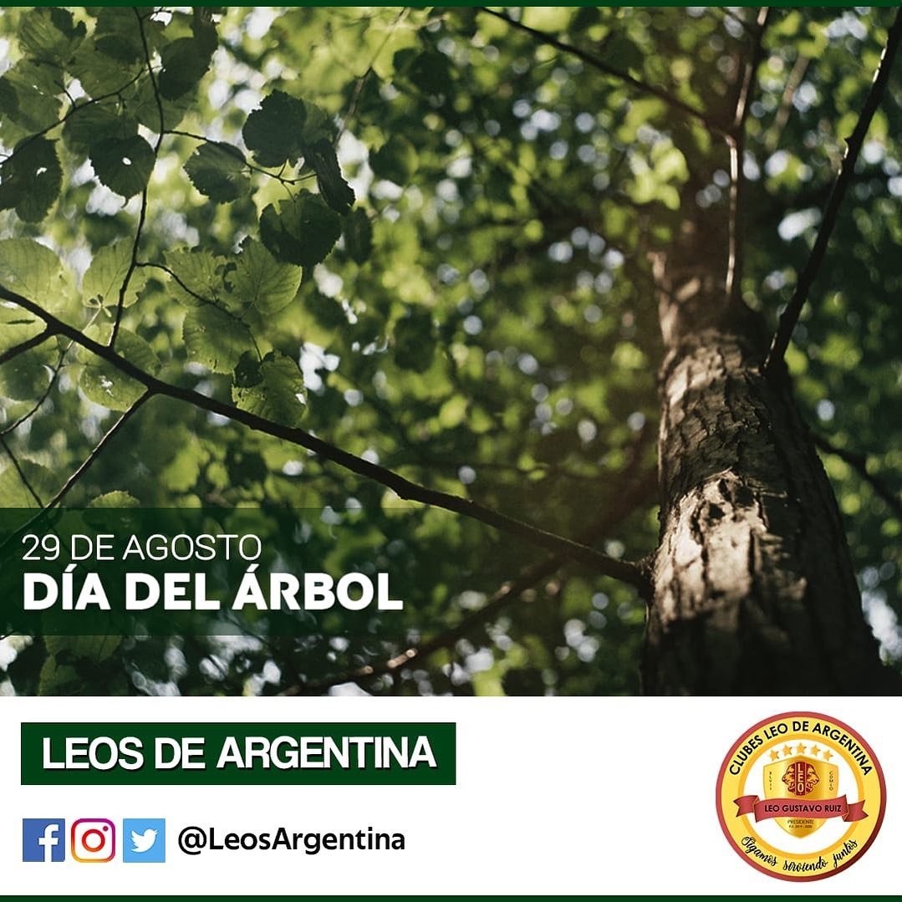

| PLANTAR
Crisis climática
Beneficios de la forestación
Los ecosistemas forestales tienen la capacidad de disminuir el efecto invernadero a través de dos procesos relacionados al ciclo del carbono, la fijación o captura de carbono y la reducción de emisiones debidas a la deforestación y degradación forestal.
Los bosques durante su crecimiento absorben el bióxido de carbono (CO2) de la atmósfera y lo convierten en carbono que se almacena en su tronco, raíces y hojas. Adicionalmente queda carbono almacenado en el suelo, en la materia orgánica al ras del suelo (hojarasca) y en los árboles muertos.
Este proceso en el que los bosques capturan carbono de la atmósfera contribuye a la mitigación del cambio climático. Un bosque que crece está catalogado como un sumidero de carbono.
De forma inversa con la destrucción de un bosque o su degradación se libera hacia la atmósfera el carbono que alguna vez fue almacenado, contribuyendo a agravar el problema del cambio climático. Se estima a nivel mundial que el cambio de uso de suelo es una de las fuentes más importantes de Gases Efecto Invernadero (GEI).
Además, los árboles producen oxígeno, purifican el aire, forman suelos fértiles, evitan erosión, mantienen ríos limpios, captan agua para los acuíferos, sirven como refugios para la fauna, reducen la temperatura del suelo, propician el establecimiento de otras especies, regeneran los nutrientes del suelo y mejoran el paisaje.
Plantar un árbol es cultivar la esperanza de una vida mejor.
Sauce llorón
Es un árbol caducifloro que alcanza una altura de 8 a 12 metros de altura de ramas largas, flexibles, delgadas y que llegan caen hasta el suelo.
Tiene un tronco de corteza fisurada, unas hojas lanceoladas y afiladas. Su pecíolo corto y las inflorescencias, de color amarillo pálido, brotan junto con las hojas en invierno.
Álamo
Se trata de un árbol caducifolio, de hojas anchas y con largos pecíolos. De los laterales de sus hojas brotan sus flores colgantes y de colores blanquecinos y verdes. Cuando llega el otoño, se tiñe de amarillo perdiendo la totalidad de sus hojas que vuelven a renacer con la primavera.
Esta especie arbórea puede llegar a medir hasta 25 metros de altura. El álamo se alza sobre un tronco recto y cilíndrico recubierto por una una corteza blanquecina y agrietada.
Kiri
El árbol Kiri, es originario de China y también conocido como árbol Emperatriz. Suele crecer hasta unos 27 metros de altura, con troncos de entre 7 y 20 metros de diámetros. El Kiri se caracteriza por sus grandes hojas, que llegan a los 40 centímetros de ancho.
Desde un punto de vista económico esta especie hace un uso óptimo de los recursos disponibles y su capacidad de crecimiento es de las más elevadas del reino vegetal.